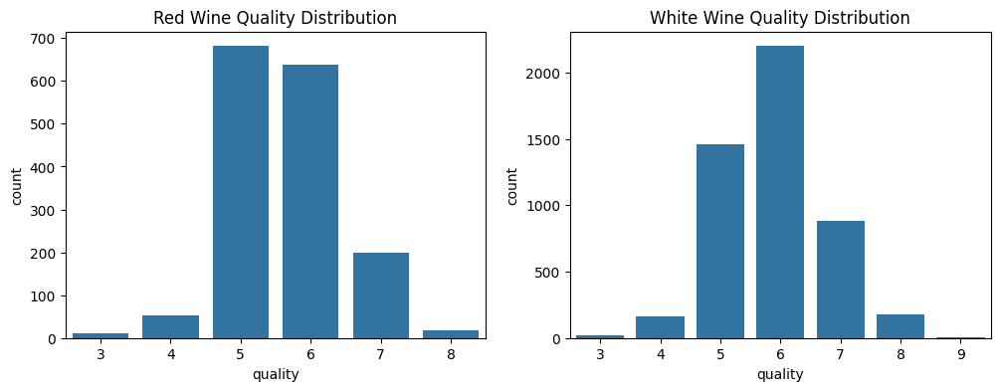

UAS#
Assignment Refrence: umarmuchtar
import os, subprocess
import pandas as pd
# file_path = os.path.abspath('resource/winequality-red.csv')
# try:
# subprocess.run(['start', '', file_path], shell=True)
# except Exception as e:
# print("Something went wrong:", e)
df_red = pd.read_csv('resource/winequality-red.csv', sep=';')
df_white = pd.read_csv('resource/winequality-white.csv', sep=';')
df_red.info()
<class 'pandas.core.frame.DataFrame'>
RangeIndex: 1599 entries, 0 to 1598
Data columns (total 12 columns):
# Column Non-Null Count Dtype
--- ------ -------------- -----
0 fixed acidity 1599 non-null float64
1 volatile acidity 1599 non-null float64
2 citric acid 1599 non-null float64
3 residual sugar 1599 non-null float64
4 chlorides 1599 non-null float64
5 free sulfur dioxide 1599 non-null float64
6 total sulfur dioxide 1599 non-null float64
7 density 1599 non-null float64
8 pH 1599 non-null float64
9 sulphates 1599 non-null float64
10 alcohol 1599 non-null float64
11 quality 1599 non-null int64
dtypes: float64(11), int64(1)
memory usage: 150.0 KB
df_white.info()
<class 'pandas.core.frame.DataFrame'>
RangeIndex: 4898 entries, 0 to 4897
Data columns (total 12 columns):
# Column Non-Null Count Dtype
--- ------ -------------- -----
0 fixed acidity 4898 non-null float64
1 volatile acidity 4898 non-null float64
2 citric acid 4898 non-null float64
3 residual sugar 4898 non-null float64
4 chlorides 4898 non-null float64
5 free sulfur dioxide 4898 non-null float64
6 total sulfur dioxide 4898 non-null float64
7 density 4898 non-null float64
8 pH 4898 non-null float64
9 sulphates 4898 non-null float64
10 alcohol 4898 non-null float64
11 quality 4898 non-null int64
dtypes: float64(11), int64(1)
memory usage: 459.3 KB
Wine Quality#
Donated on 10/6/2009
Two datasets are included, related to red and white vinho verde wine samples, from the north of Portugal. The goal is to model wine quality based on physicochemical tests (see Cortez et al., 2009).
Wine Quality Datasets These datasets are public available for research purposes only. The details are described in [Cortez et al., 2009]: [©Elsevier] [Pre-press (pdf)] [bib]. Please include this citation if you plan to use these datasets: P. Cortez, A. Cerdeira, F. Almeida, T. Matos and J. Reis. Modeling wine preferences by data mining from physicochemical properties. In Decision Support Systems, Elsevier, 47(4):547-553, 2009.
The data can be used to test (ordinal) regression or classification (in effect, this is a multi-class task, where the clases are ordered) methods. Other research issues are feature selection and outlier detection. The data includes two datasets:
winequality-red.csv - red wine preference samples; winequality-white.csv - white wine preference samples; The datasets are available here: winequality.zip Vinho verde is a unique product from the Minho (northwest) region of Portugal. Medium in alcohol, is it particularly appreciated due to its freshness (specially in the summer). More details can be found at: http://www.vinhoverde.pt/en/
Return to: Paulo Cortez Downloads Paulo Cortez Home Pagex
Dataset Characteristics: Multivariate
Subject Area: Business
Associated Tasks: Classification, Regression
Feature Type: Real
Instance: 4898
Features: 11
Dataset Information#
Additional Information
The two datasets are related to red and white variants of the Portuguese “Vinho Verde” wine. For more details, consult: http://www.vinhoverde.pt/en/ or the reference [Cortez et al., 2009]. Due to privacy and logistic issues, only physicochemical (inputs) and sensory (the output) variables are available (e.g. there is no data about grape types, wine brand, wine selling price, etc.).
These datasets can be viewed as classification or regression tasks. The classes are ordered and not balanced (e.g. there are many more normal wines than excellent or poor ones). Outlier detection algorithms could be used to detect the few excellent or poor wines. Also, we are not sure if all input variables are relevant. So it could be interesting to test feature selection methods.
Introductory Paper#
Modeling wine preferences by data mining from physicochemical properties
By P. Cortez, A. Cerdeira, Fernando Almeida, Telmo Matos, J. Reis. 2009
Published in Decision Support Systems
Variable Table#
Variable Name |
Role |
Type |
Decription |
Units |
Missing Values |
|---|---|---|---|---|---|
fixed_acidity |
Feature |
Continuous |
… |
… |
No |
volatile_acidity |
Feature |
Continuous |
… |
… |
No |
citric_acid |
Feature |
Continuous |
… |
… |
No |
residual_sugar |
Feature |
Continuous |
… |
… |
No |
chlorides |
Feature |
Continuous |
… |
… |
No |
free_sulfur_dioxide |
Feature |
Continuous |
… |
… |
No |
total_sulfur_dioxide |
Feature |
Continuous |
… |
… |
No |
density |
Feature |
Continuous |
… |
… |
No |
pH |
Feature |
Continuous |
… |
… |
No |
sulphates |
Feature |
Continuous |
… |
… |
No |
alcohol |
Feature |
Continuous |
… |
… |
No |
|
Target |
Integer |
score between 0 and 10 |
… |
No |
color |
Other |
Categorical |
red or white |
… |
No |
Additional Variable Information#
For more information, read [Cortez et al., 2009].
Input variables (based on physicochemical tests):
1 - fixed acidity
2 - volatile acidity
3 - citric acid
4 - residual sugar
5 - chlorides
6 - free sulfur dioxide
7 - total sulfur dioxide
8 - density
9 - pH
10 - sulphates
11 - alcohol
Output variable (based on sensory data):
12 - quality (score between 0 and 10)
Source: Wine Quality
Dataset Files#
File |
Size |
|---|---|
winequality-white.csv |
258.2 KB |
winequality-red.csv |
82.2 KB |
winequality.names |
3.2 KB |
More Information#
Install the ucimlrepo package:
pip install ucimlrepo
Import the dataset into your code:
from ucimlrepo import fetch_ucirepo
# fetch dataset
wine_quality = fetch_ucirepo(id=186)
# data (as pandas dataframes)
X = wine_quality.data.features
y = wine_quality.data.targets
# metadata
print(wine_quality.metadata)
# variable information
print(wine_quality.variables)
View Full Documentation
License: This dataset is licensed under a Creative Commons Attribution 4.0 International (CC BY 4.0) license.
Assignment To-Do#
Data Mining Process (CRISP-DM)#
1. Business Understanding#
1.1. Define the Problem#
1.2. Objectives#
1.3. Identify Stakeholders#
1.4. Success Criteria#
2. Data Understanding#
import pandas as pd
import matplotlib.pyplot as plt
import seaborn as sns
2.1 Data Collection#
df_red = pd.read_csv('resource/winequality-red.csv', sep=';')
df_white = pd.read_csv('resource/winequality-white.csv', sep=';')
2.2. Data Description#
info_red = df_red.info()
<class 'pandas.core.frame.DataFrame'>
RangeIndex: 1599 entries, 0 to 1598
Data columns (total 12 columns):
# Column Non-Null Count Dtype
--- ------ -------------- -----
0 fixed acidity 1599 non-null float64
1 volatile acidity 1599 non-null float64
2 citric acid 1599 non-null float64
3 residual sugar 1599 non-null float64
4 chlorides 1599 non-null float64
5 free sulfur dioxide 1599 non-null float64
6 total sulfur dioxide 1599 non-null float64
7 density 1599 non-null float64
8 pH 1599 non-null float64
9 sulphates 1599 non-null float64
10 alcohol 1599 non-null float64
11 quality 1599 non-null int64
dtypes: float64(11), int64(1)
memory usage: 150.0 KB
desc_red = df_red.describe()
print(desc_red)
fixed acidity volatile acidity citric acid residual sugar \
count 1599.000000 1599.000000 1599.000000 1599.000000
mean 8.319637 0.527821 0.270976 2.538806
std 1.741096 0.179060 0.194801 1.409928
min 4.600000 0.120000 0.000000 0.900000
25% 7.100000 0.390000 0.090000 1.900000
50% 7.900000 0.520000 0.260000 2.200000
75% 9.200000 0.640000 0.420000 2.600000
max 15.900000 1.580000 1.000000 15.500000
chlorides free sulfur dioxide total sulfur dioxide density \
count 1599.000000 1599.000000 1599.000000 1599.000000
mean 0.087467 15.874922 46.467792 0.996747
std 0.047065 10.460157 32.895324 0.001887
min 0.012000 1.000000 6.000000 0.990070
25% 0.070000 7.000000 22.000000 0.995600
50% 0.079000 14.000000 38.000000 0.996750
75% 0.090000 21.000000 62.000000 0.997835
max 0.611000 72.000000 289.000000 1.003690
pH sulphates alcohol quality
count 1599.000000 1599.000000 1599.000000 1599.000000
mean 3.311113 0.658149 10.422983 5.636023
std 0.154386 0.169507 1.065668 0.807569
min 2.740000 0.330000 8.400000 3.000000
25% 3.210000 0.550000 9.500000 5.000000
50% 3.310000 0.620000 10.200000 6.000000
75% 3.400000 0.730000 11.100000 6.000000
max 4.010000 2.000000 14.900000 8.000000
info_white = df_white.info()
<class 'pandas.core.frame.DataFrame'>
RangeIndex: 4898 entries, 0 to 4897
Data columns (total 12 columns):
# Column Non-Null Count Dtype
--- ------ -------------- -----
0 fixed acidity 4898 non-null float64
1 volatile acidity 4898 non-null float64
2 citric acid 4898 non-null float64
3 residual sugar 4898 non-null float64
4 chlorides 4898 non-null float64
5 free sulfur dioxide 4898 non-null float64
6 total sulfur dioxide 4898 non-null float64
7 density 4898 non-null float64
8 pH 4898 non-null float64
9 sulphates 4898 non-null float64
10 alcohol 4898 non-null float64
11 quality 4898 non-null int64
dtypes: float64(11), int64(1)
memory usage: 459.3 KB
desc_white = df_white.describe()
print(desc_white)
fixed acidity volatile acidity citric acid residual sugar \
count 4898.000000 4898.000000 4898.000000 4898.000000
mean 6.854788 0.278241 0.334192 6.391415
std 0.843868 0.100795 0.121020 5.072058
min 3.800000 0.080000 0.000000 0.600000
25% 6.300000 0.210000 0.270000 1.700000
50% 6.800000 0.260000 0.320000 5.200000
75% 7.300000 0.320000 0.390000 9.900000
max 14.200000 1.100000 1.660000 65.800000
chlorides free sulfur dioxide total sulfur dioxide density \
count 4898.000000 4898.000000 4898.000000 4898.000000
mean 0.045772 35.308085 138.360657 0.994027
std 0.021848 17.007137 42.498065 0.002991
min 0.009000 2.000000 9.000000 0.987110
25% 0.036000 23.000000 108.000000 0.991723
50% 0.043000 34.000000 134.000000 0.993740
75% 0.050000 46.000000 167.000000 0.996100
max 0.346000 289.000000 440.000000 1.038980
pH sulphates alcohol quality
count 4898.000000 4898.000000 4898.000000 4898.000000
mean 3.188267 0.489847 10.514267 5.877909
std 0.151001 0.114126 1.230621 0.885639
min 2.720000 0.220000 8.000000 3.000000
25% 3.090000 0.410000 9.500000 5.000000
50% 3.180000 0.470000 10.400000 6.000000
75% 3.280000 0.550000 11.400000 6.000000
max 3.820000 1.080000 14.200000 9.000000
2.3. Data Exploration#
plt.figure(figsize=(12,4))
plt.subplot(1,2,1)
sns.countplot(x='quality', data=df_red)
plt.title('Red Wine Quality Distribution')
plt.subplot(1,2,2)
sns.countplot(x='quality', data=df_white)
plt.title('White Wine Quality Distribution')
Text(0.5, 1.0, 'White Wine Quality Distribution')

2.4. Data Quality#
missing_red = df_red.isnull().sum()
print(missing_red)
fixed acidity 0
volatile acidity 0
citric acid 0
residual sugar 0
chlorides 0
free sulfur dioxide 0
total sulfur dioxide 0
density 0
pH 0
sulphates 0
alcohol 0
quality 0
dtype: int64
missing_white = df_white.isnull().sum()
print(missing_white)
fixed acidity 0
volatile acidity 0
citric acid 0
residual sugar 0
chlorides 0
free sulfur dioxide 0
total sulfur dioxide 0
density 0
pH 0
sulphates 0
alcohol 0
quality 0
dtype: int64
Q1 = df_red['chlorides'].quantile(0.25)
Q3 = df_red['chlorides'].quantile(0.75)
IQR = Q3 - Q1
print(IQR)
0.01999999999999999
3. Data Preparation#
import pandas as pd
import numpy as np
from sklearn.preprocessing import StandardScaler
from sklearn.feature_selection import SelectKBest, f_classif
3.1 Data Cleaning#
def handle_outliers(df, column):
Q1 = df[column].quantile(0.25)
Q3 = df[column].quantile(0.75)
IQR = Q3 - Q1
lower_bound = Q1 - 1.5 * IQR
upper_bound = Q3 + 1.5 * IQR
df[column] = np.where(df[column] < lower_bound, lower_bound, df[column])
df[column] = np.where(df[column] > upper_bound, upper_bound, df[column])
return df
outlier_cols = ['residual sugar', 'chlorides', 'free sulfur dioxide']
for col in outlier_cols:
df_red = handle_outliers(df_red, col)
df_white = handle_outliers(df_white, col)
3.2. Data Transformation#
# Binning target quality menjadi 3 kelas
bins = [0, 4, 6, 10]
labels = ['low', 'medium', 'high']
df_red['quality_class'] = pd.cut(df_red['quality'], bins=bins, labels=labels)
df_white['quality_class'] = pd.cut(df_white['quality'], bins=bins, labels=labels)
# Feature engineering: buat fitur baru
for df in [df_red, df_white]:
df['acidity_ratio'] = df['fixed acidity'] / df['volatile acidity']
df['sulfur_ratio'] = df['free sulfur dioxide'] / df['total sulfur dioxide']
df['alcohol_sugar_interaction'] = df['alcohol'] * df['residual sugar']
# Normalisasi fitur numerik
scaler = StandardScaler()
num_features = ['fixed acidity', 'volatile acidity', 'citric acid', 'residual sugar',
'chlorides', 'free sulfur dioxide', 'total sulfur dioxide', 'density',
'pH', 'sulphates', 'alcohol', 'acidity_ratio', 'sulfur_ratio',
'alcohol_sugar_interaction']
df_red[num_features] = scaler.fit_transform(df_red[num_features])
df_white[num_features] = scaler.fit_transform(df_white[num_features])
3.3. Data Integration#
df_red_int = df_red.copy()
df_white_int = df_white.copy()
df_red_int['wine_type'] = 'red'
df_white_int['wine_type'] = 'white'
# Gabungkan dataset
df_combined = pd.concat([df_red_int, df_white_int])
# Encoding variabel kategori
df_combined = pd.get_dummies(df_combined, columns=['wine_type'])
3.4. Data Reduction#
# Untuk red wine
X_red = df_red.select_dtypes(include=[np.number])
y_red = df_red['quality_class']
# Untuk white wine
X_white = df_white.select_dtypes(include=[np.number])
y_white = df_white['quality_class']
# Seleksi fitur untuk red wine
selector_red = SelectKBest(score_func=f_classif, k=10)
X_red_selected = selector_red.fit_transform(X_red, y_red)
# Dapatkan nama fitur terpilih
selected_features_red = X_red.columns[selector_red.get_support()]
df_red_final = pd.DataFrame(X_red_selected, columns=selected_features_red)
df_red_final['quality_class'] = y_red.values
# Seleksi fitur untuk white wine
selector_white = SelectKBest(score_func=f_classif, k=10)
X_white_selected = selector_white.fit_transform(X_white, y_white)
# Dapatkan nama fitur terpilih
selected_features_white = X_white.columns[selector_white.get_support()]
df_white_final = pd.DataFrame(X_white_selected, columns=selected_features_white)
df_white_final['quality_class'] = y_white.values
print("Red Wine Final Shape:", df_red_final.shape)
print("White Wine Final Shape:", df_white_final.shape)
print("\nRed Wine Features:", selected_features_red.tolist())
print("White Wine Features:", selected_features_white.tolist())
Red Wine Final Shape: (1599, 11)
White Wine Final Shape: (4898, 11)
Red Wine Features: ['volatile acidity', 'citric acid', 'chlorides', 'total sulfur dioxide', 'density', 'sulphates', 'alcohol', 'quality', 'acidity_ratio', 'alcohol_sugar_interaction']
White Wine Features: ['volatile acidity', 'residual sugar', 'chlorides', 'free sulfur dioxide', 'total sulfur dioxide', 'density', 'alcohol', 'quality', 'sulfur_ratio', 'alcohol_sugar_interaction']
4. Modeling#
import numpy as np
import pandas as pd
from sklearn.model_selection import train_test_split, GridSearchCV
from sklearn.tree import DecisionTreeClassifier
from sklearn.naive_bayes import GaussianNB
from sklearn.neural_network import MLPClassifier
from sklearn.metrics import f1_score, classification_report, confusion_matrix
from sklearn.preprocessing import LabelEncoder
from sklearn.pipeline import make_pipeline
from sklearn.compose import ColumnTransformer
4.1. Modeling Techniques#
Decision Tree: Model interpretable dengan kemampuan handle non-linear relationship
Naive Bayes: Model probabilistik sederhana dengan asumsi independensi fitur
ANN (MLPClassifier): Jaringan saraf tiruan untuk pattern recognition kompleks
4.2. Build Models#
# Fungsi untuk memproses dataset dengan lebih aman
def prepare_data(df):
# Pisahkan fitur dan target
X = df.drop('quality_class', axis=1)
y = df['quality_class']
# Encode target labels
le = LabelEncoder()
y_encoded = le.fit_transform(y)
# Simpan nama fitur
feature_names = list(X.columns)
# Konversi ke array numpy
X = X.values
# Split data (80% train, 20% test)
X_train, X_test, y_train, y_test = train_test_split(
X, y_encoded, test_size=0.2, random_state=42, stratify=y_encoded
)
return X_train, X_test, y_train, y_test, le, feature_names
# Siapkan data red wine
X_red_train, X_red_test, y_red_train, y_red_test, le_red, red_features = prepare_data(df_red_final)
# Siapkan data white wine
X_white_train, X_white_test, y_white_train, y_white_test, le_white, white_features = prepare_data(df_white_final)
# Inisialisasi model dasar
models = {
'Decision Tree': DecisionTreeClassifier(random_state=42),
'Naive Bayes': GaussianNB(),
'ANN': MLPClassifier(max_iter=1000, random_state=42, early_stopping=True)
}
# Fungsi untuk melatih model
def train_models(X_train, y_train):
trained_models = {}
for name, model in models.items():
print(f"Training {name}...")
model.fit(X_train, y_train)
trained_models[name] = model
return trained_models
# Latih model untuk red wine
print("\nTraining models for Red Wine...")
red_models = train_models(X_red_train, y_red_train)
# Latih model untuk white wine
print("\nTraining models for White Wine...")
white_models = train_models(X_white_train, y_white_train)
Training models for Red Wine...
Training Decision Tree...
Training Naive Bayes...
Training ANN...
Training models for White Wine...
Training Decision Tree...
Training Naive Bayes...
Training ANN...
4.3. Tune Models#
# Hyperparameter tuning untuk Decision Tree
dt_params = {
'max_depth': [3, 5, 7, 10, None],
'min_samples_split': [2, 5, 10],
'criterion': ['gini', 'entropy']
}
# Hyperparameter tuning untuk ANN
ann_params = {
'hidden_layer_sizes': [(50,), (100,), (50, 50)],
'activation': ['relu', 'tanh'],
'alpha': [0.0001, 0.001, 0.01],
'learning_rate_init': [0.001, 0.01]
}
# Fungsi untuk tuning model
def tune_model(model, params, X_train, y_train):
grid = GridSearchCV(
estimator=model,
param_grid=params,
scoring='f1_weighted',
cv=3, # Mengurangi cv untuk mempercepat
n_jobs=-1,
verbose=1
)
grid.fit(X_train, y_train)
print(f"Best params: {grid.best_params_}")
return grid.best_estimator_
# Tuning hanya untuk model yang memerlukan
print("\nTuning models for Red Wine...")
red_models['Decision Tree'] = tune_model(
DecisionTreeClassifier(random_state=42),
dt_params,
X_red_train,
y_red_train
)
# ANN untuk red wine - menggunakan early stopping
print("\nTuning ANN for Red Wine (ini mungkin memerlukan waktu)...")
red_models['ANN'] = tune_model(
MLPClassifier(max_iter=1000, random_state=42, early_stopping=True),
ann_params,
X_red_train,
y_red_train
)
print("\nTuning models for White Wine...")
white_models['Decision Tree'] = tune_model(
DecisionTreeClassifier(random_state=42),
dt_params,
X_white_train,
y_white_train
)
# ANN untuk white wine - menggunakan early stopping
print("\nTuning ANN for White Wine (ini mungkin memerlukan waktu)...")
white_models['ANN'] = tune_model(
MLPClassifier(max_iter=1000, random_state=42, early_stopping=True),
ann_params,
X_white_train,
y_white_train
)
Tuning models for Red Wine...
Fitting 3 folds for each of 30 candidates, totalling 90 fits
Best params: {'criterion': 'gini', 'max_depth': 3, 'min_samples_split': 2}
Tuning ANN for Red Wine (ini mungkin memerlukan waktu)...
Fitting 3 folds for each of 36 candidates, totalling 108 fits
Best params: {'activation': 'tanh', 'alpha': 0.01, 'hidden_layer_sizes': (50, 50), 'learning_rate_init': 0.01}
Tuning models for White Wine...
Fitting 3 folds for each of 30 candidates, totalling 90 fits
Best params: {'criterion': 'gini', 'max_depth': 3, 'min_samples_split': 2}
Tuning ANN for White Wine (ini mungkin memerlukan waktu)...
Fitting 3 folds for each of 36 candidates, totalling 108 fits
Best params: {'activation': 'tanh', 'alpha': 0.0001, 'hidden_layer_sizes': (50, 50), 'learning_rate_init': 0.01}
4.4. Validate Models#
def evaluate_model(model, X_test, y_test, le):
# Prediksi
y_pred = model.predict(X_test)
# Decode labels
y_test_decoded = le.inverse_transform(y_test)
y_pred_decoded = le.inverse_transform(y_pred)
# Hitung metrik
f1 = f1_score(y_test_decoded, y_pred_decoded, average='weighted')
report = classification_report(y_test_decoded, y_pred_decoded)
cm = confusion_matrix(y_test_decoded, y_pred_decoded)
print(f"\n{'='*50}")
print(f"{type(model).__name__} Performance")
print(f"F1-score (weighted): {f1:.4f}")
print("\nClassification Report:")
print(report)
print("\nConfusion Matrix:")
print(cm)
return f1
# Evaluasi model untuk red wine
print("\nEvaluating Red Wine Models...")
red_results = {}
for name, model in red_models.items():
print(f"\nEvaluating {name} for Red Wine")
f1 = evaluate_model(model, X_red_test, y_red_test, le_red)
red_results[name] = f1
# Evaluasi model untuk white wine
print("\nEvaluating White Wine Models...")
white_results = {}
for name, model in white_models.items():
print(f"\nEvaluating {name} for White Wine")
f1 = evaluate_model(model, X_white_test, y_white_test, le_white)
white_results[name] = f1
Evaluating Red Wine Models...
Evaluating Decision Tree for Red Wine
==================================================
DecisionTreeClassifier Performance
F1-score (weighted): 1.0000
Classification Report:
precision recall f1-score support
high 1.00 1.00 1.00 43
low 1.00 1.00 1.00 13
medium 1.00 1.00 1.00 264
accuracy 1.00 320
macro avg 1.00 1.00 1.00 320
weighted avg 1.00 1.00 1.00 320
Confusion Matrix:
[[ 43 0 0]
[ 0 13 0]
[ 0 0 264]]
Evaluating Naive Bayes for Red Wine
==================================================
GaussianNB Performance
F1-score (weighted): 0.9842
Classification Report:
precision recall f1-score support
high 1.00 0.93 0.96 43
low 0.92 0.92 0.92 13
medium 0.99 1.00 0.99 264
accuracy 0.98 320
macro avg 0.97 0.95 0.96 320
weighted avg 0.98 0.98 0.98 320
Confusion Matrix:
[[ 40 0 3]
[ 0 12 1]
[ 0 1 263]]
Evaluating ANN for Red Wine
==================================================
MLPClassifier Performance
F1-score (weighted): 0.9900
Classification Report:
precision recall f1-score support
high 1.00 1.00 1.00 43
low 1.00 0.77 0.87 13
medium 0.99 1.00 0.99 264
accuracy 0.99 320
macro avg 1.00 0.92 0.95 320
weighted avg 0.99 0.99 0.99 320
Confusion Matrix:
[[ 43 0 0]
[ 0 10 3]
[ 0 0 264]]
Evaluating White Wine Models...
Evaluating Decision Tree for White Wine
==================================================
DecisionTreeClassifier Performance
F1-score (weighted): 1.0000
Classification Report:
precision recall f1-score support
high 1.00 1.00 1.00 212
low 1.00 1.00 1.00 37
medium 1.00 1.00 1.00 731
accuracy 1.00 980
macro avg 1.00 1.00 1.00 980
weighted avg 1.00 1.00 1.00 980
Confusion Matrix:
[[212 0 0]
[ 0 37 0]
[ 0 0 731]]
Evaluating Naive Bayes for White Wine
==================================================
GaussianNB Performance
F1-score (weighted): 0.9689
Classification Report:
precision recall f1-score support
high 0.99 0.89 0.94 212
low 0.95 0.95 0.95 37
medium 0.97 0.99 0.98 731
accuracy 0.97 980
macro avg 0.97 0.94 0.95 980
weighted avg 0.97 0.97 0.97 980
Confusion Matrix:
[[188 0 24]
[ 0 35 2]
[ 2 2 727]]
Evaluating ANN for White Wine
==================================================
MLPClassifier Performance
F1-score (weighted): 0.9939
Classification Report:
precision recall f1-score support
high 1.00 0.98 0.99 212
low 1.00 0.97 0.99 37
medium 0.99 1.00 1.00 731
accuracy 0.99 980
macro avg 1.00 0.98 0.99 980
weighted avg 0.99 0.99 0.99 980
Confusion Matrix:
[[207 0 5]
[ 0 36 1]
[ 0 0 731]]
print("\n\n" + "="*50)
print("Final Model Performance Summary")
print("="*50)
print("\nRed Wine Performance:")
for model, score in red_results.items():
print(f"- {model}: F1-score = {score:.4f}")
print("\nWhite Wine Performance:")
for model, score in white_results.items():
print(f"- {model}: F1-score = {score:.4f}")
# Simpan model terbaik untuk deployment
import joblib
# Untuk red wine
best_red_model = max(red_models, key=red_results.get)
joblib.dump((red_models[best_red_model], le_red, red_features), 'best_red_wine_model.pkl')
# Untuk white wine
best_white_model = max(white_models, key=white_results.get)
joblib.dump((white_models[best_white_model], le_white, white_features), 'best_white_wine_model.pkl')
print(f"\nSaved best model for Red Wine: {best_red_model}")
print(f"Saved best model for White Wine: {best_white_model}")
==================================================
Final Model Performance Summary
==================================================
Red Wine Performance:
- Decision Tree: F1-score = 1.0000
- Naive Bayes: F1-score = 0.9842
- ANN: F1-score = 0.9900
White Wine Performance:
- Decision Tree: F1-score = 1.0000
- Naive Bayes: F1-score = 0.9689
- ANN: F1-score = 0.9939
Saved best model for Red Wine: Decision Tree
Saved best model for White Wine: Decision Tree
5. Evaluation#
5.1. Evaluate Results#
5.1.1. ROC#
5.1.2. AUC#
5.2. Review Business Objectives#
5.3. Model Limitations#
5.4. Next Steps#
6. Deployment#
We’re working on it ;)